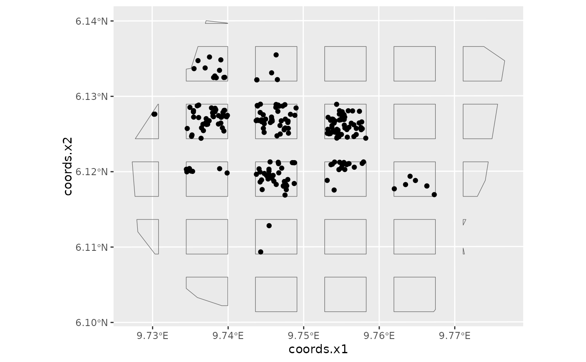

This is the gorillas dataset from the package spatstat.data, reformatted
as point process data for use with inlabru.
data(gorillas)
Format
The data are a list that contains these elements:
nests:A
SpatialPointsDataFrameobject containing the locations of the gorilla nests.boundary:An
SpatialPolygonsDataFrameobject defining the boundary of the region that was searched for the nests.mesh:An
inla.meshobject containing a mesh that can be used with functionlgcpto fit a LGCP to the nest data.gcov:A list of SpatialGridDataFrame objects, one for each of these spatial covariates:
aspectCompass direction of the terrain slope. Categorical, with levels N, NE, E, SE, S, SW, W and NW, which are coded as integers 1 to 8.
elevationDigital elevation of terrain, in metres.
heatHeat Load Index at each point on the surface (Beer's aspect), discretised. Categorical with values Warmest (Beer's aspect between 0 and 0.999), Moderate (Beer's aspect between 1 and 1.999), Coolest (Beer's aspect equals 2). These are coded as integers 1, 2 and 3, in that order.
slopangleTerrain slope, in degrees.
slopetypeType of slope. Categorical, with values Valley, Toe (toe slope), Flat, Midslope, Upper and Ridge. These are coded as integers 1 to 6.
vegetationVegetation type: a categorical variable with 6 levels coded as integers 1 to 6 (in order of increasing expected habitat suitability)
waterdistEuclidean distance from nearest water body, in metres.
plotsamplePlot sample of gorilla nests, sampling 9x9 over the region, with 60\
countsA SpatialPointsDataFrame frame with elements
x,y,count,exposure, being the x- and y-coordinates of the centre of each plot, the count in each plot and the area of each plot.plotsA
SpatialPolygonsDataFramedefining the individual plot boundaries.nestsA
SpatialPointsDataFramegiving the locations of each detected nest.
Source
Library spatstat.data.
References
Funwi-Gabga, N. (2008) A pastoralist survey and fire impact assessment in the Kagwene Gorilla Sanctuary, Cameroon. M.Sc. thesis, Geology and Environmental Science, University of Buea, Cameroon.
Funwi-Gabga, N. and Mateu, J. (2012) Understanding the nesting spatial behaviour of gorillas in the Kagwene Sanctuary, Cameroon. Stochastic Environmental Research and Risk Assessment 26 (6), 793-811.
Examples
data(gorillas, package = "inlabru") # get the data # extract all the objects, for convenience: # plot all the nests, mesh and boundary ggplot() + gg(gorillas$mesh) + gg(gorillas$boundary) + gg(gorillas$nests)#>#>